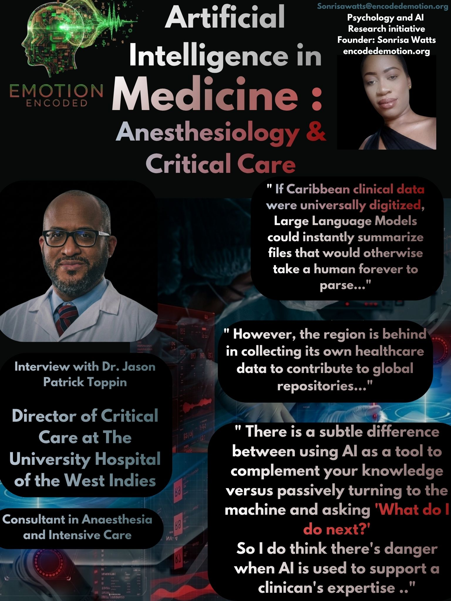

This research brief is based on a general introductory discussion via phone call with Dr. Jason Patrick Toppin. Emotion Encoded conducted a qualitative preliminary interview with Dr. Jason Patrick Toppin, Consultant Anesthesiologist and Critical Care Specialist, to examine trust calibration between human intuition and Artificial Intelligence in high-stakes medical environments. He is the Director of Critical Care at The University Hospital of the West Indies. Drawing from extensive experience across the University Hospital of the West Indies and private practice, Dr. Toppin argues that while large language models excel at data synthesis and administrative heavy lifting, they fail to grasp localized demographic context and lack clinical accountability. True medical expertise relies on a clinician's internal diagnostic framework, a cognitive process that passive automation directly threatens.
Finding 1: The Administrative Reality vs. Advanced Diagnostics
A critical distinction uncovered in the discussion is the actual nature of the technology currently permeating the region. Dr. Toppin clarified that the AI tools presently used in local practice are general consumer platforms like ChatGPT, Gemini, and Claude. There are no actual, advanced AI diagnostic tools being deployed or utilized within the Caribbean clinical field right now. Because the technology is currently limited to these mainstream text-based models rather than specialized, autonomous diagnostic software, the current intersection of AI and Caribbean medicine remains strictly administrative and communicative rather than clinical.
Finding 2: Augmentation vs. Submission and Human Liability
The primary hazard of modern clinical technology is automation bias, where practitioners risk offloading critical thinking to software. Dr. Toppin emphasizes that AI must remain a tool that augments the clinician, rather than a system that dictates the next move. There is a distinct, dangerous boundary between a clinician using AI to cross-check clinical risks and a practitioner simply turning to a screen and asking, "What do I do next?" In critical care and anesthesia, where split-second decisions alter patient outcomes, this passive reliance is a major vulnerability. Dr. Toppin notes that a safe workflow requires a clinician to formulate their own medical plan first, using the AI strictly to complement their knowledge, such as asking if there are unexpected drug interactions for a specific chosen medication. Ultimately, professional duty cannot be outsourced to an algorithm; the human practitioner retains total liability.
Finding 3: The Demographics of Data and The Montego Bay Blind Spot
A massive barrier to deploying global AI models in the Caribbean is their inability to process unique regional profiles. While an LLM can calculate clinical averages based on massive international datasets, it is blind to the cultural and geographic realities of the local population. Dr. Toppin pointed out that the vast majority of current models are built entirely on data developed from populations that are racially and culturally different from the Caribbean. He noted that while core human anatomy and physiology are universal, the "best treatment plan" is highly dependent on where you are and what fits the local landscape. Dr. Toppin used a striking geographic contrast to illustrate this gap: "What fits in rural Arkansas does not apply to Montego Bay." Because the Caribbean is safely behind in collecting its own healthcare data and populating digital repositories, running global AI models in local hospitals creates a context deficit that only human intuition and local awareness can correct.
Finding 4: Technical Efficiency vs. Patient Comprehension
Despite the lack of specialized clinical systems, general large language models show immense promise when applied to clinical communication and heavy data parsing. Dr. Toppin noted that if a patient's historical records are fully digitized, an LLM is incredibly useful for reviewing years' worth of medical files and multiple past surgeries, instantly generating a summarized format that would take a human forever to manually compile. Furthermore, he highlights AI as an excellent tool for patient communication. Clinicians can use LLMs to take complicated, highly technical clinical decisions and instantly tailor the language so that a patient with only a basic understanding of human biology can easily understand their care plan.
Finding 5: The Shift in Training and Memory Atrophy
The conversation revealed a parallel between AI automation and a shifting landscape in medical education. The ease of accessing information via LLMs changes how the younger generation of doctors builds clinical intuition. Dr. Toppin contrasted modern training with older, more rigorous academic structures. Historically, medical students and residents had to memorize every single clinical fact, drug interaction, and rare cause through sheer mental discipline. Today, a trainee can simply open an LLM, type in a query, and get an immediate answer. Dr. Toppin warns that this shift is a double-edged sword: while it provides rapid access to data, it creates a dangerous downside. If young doctors do not store foundational information in their own heads because they assume they can always look it up, they lose the ability to brainstorm, connect disparate symptoms, and critically think through a crisis when a patient is actively crashing.
Research Implications for Emotion Encoded
The interview with Dr. Jason Toppin validates the core thesis of our research within the medical track. High-stakes clinical practitioners view AI as an administrative and data-retrieval mechanism, not a decision-making peer. The fact that the Caribbean relies entirely on generic LLMs rather than advanced clinical diagnostic systems underscores the need for localized oversight. To prevent automation bias, AI must be treated as a complementary tool: highly effective for summarizing history and tailoring patient communication, but never a substitute for autonomous human judgment and localized Caribbean experience.
Sonrisa Watts // Emotion Encoded // 2026